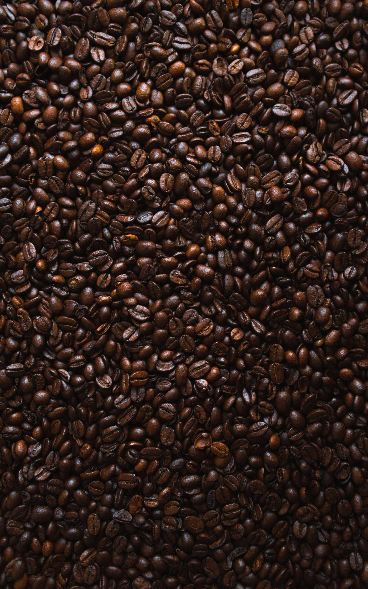
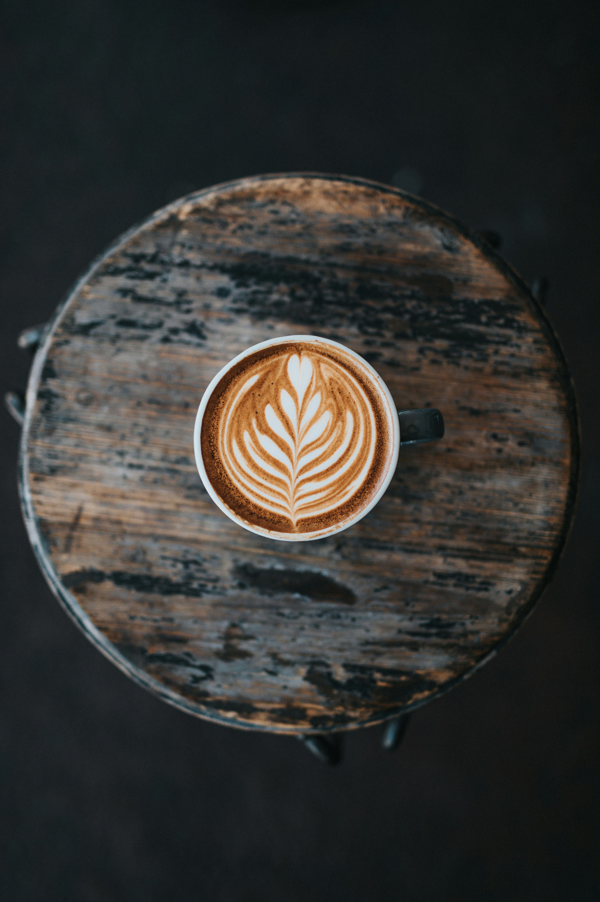

"Aromanya sangat menggugah! Ini adalah kopi terbaik yang pernah saya coba. Setiap pagi rasanya seperti hadiah untuk diri sendiri. Terima kasih, Kopi Ratuku!"
- Sarah M., BaristaNikmati Momen Terbaikmu, Seteguk Demi Seteguk.
Kopi pilihan terbaik, dari biji istimewa yang dipanggang sempurna untuk sang ratu di hatimu.
Biji Berkualitas Tinggi
Kami hanya memilih biji kopi terbaik dari perkebunan pilihan, menjamin cita rasa yang kaya dan autentik.
Proses Roasting Sempurna
Dipanggang oleh para ahli dengan metode yang presisi untuk menghasilkan keseimbangan rasa dan aroma.
Kemasan Eksklusif
Desain kemasan yang tidak hanya elegan, tetapi juga efektif menjaga kesegaran kopi favoritmu.
Temukan Khasratmu
Signature Bubuk Ratuku
Bubuk kopi halus dengan rasa cokelat dan karamel yang cocok untuk manual brew maupun tubruk klasik.
Rp 89.000 Tambah ke KeranjangArabica Gayo Bubuk
Dibuat dari arabica premium Gayo dengan profil floral, cocok untuk pour over maupun french press.
Rp 125.000 Tambah ke Keranjang

Rempah Nusantara
Perpaduan bubuk kopi robusta dan aromatik rempah untuk rasa bold yang tahan lama di lidah.
Rp 110.000 Tambah ke KeranjangGallery
Curated Stories
Tersaji hangat dengan visual yang mengabadikan setiap ritual kopi favorit ratu.

Apa Kata Mereka?
Lebih dari Sekadar Kopi
Kopi Ratuku lahir dari sebuah keyakinan bahwa setiap orang berhak mendapatkan momen istimewa untuk dirinya sendiri. Kami adalah pemuja kopi yang percaya bahwa secangkir kopi yang sempurna bisa menjadi awal dari hari yang luar biasa.
Dari biji hingga cangkir, kami memastikan setiap proses penuh dengan cinta dan dedikasi, karena Anda pantas mendapatkan yang terbaik. Anda adalah ratu di hidup Anda, dan ini adalah kopinya.
Promo Spesial untuk Ratu!
Dapatkan diskon 15% untuk pembelian pertama Anda.